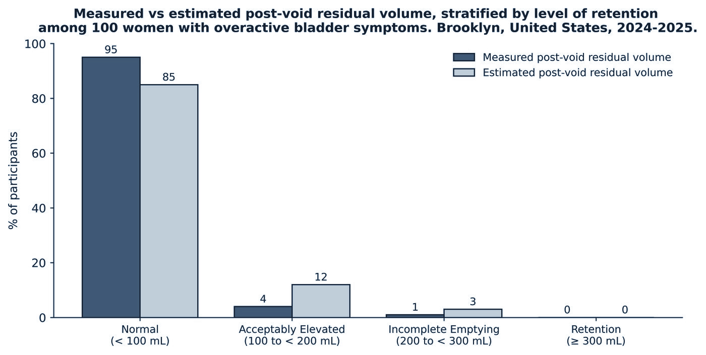
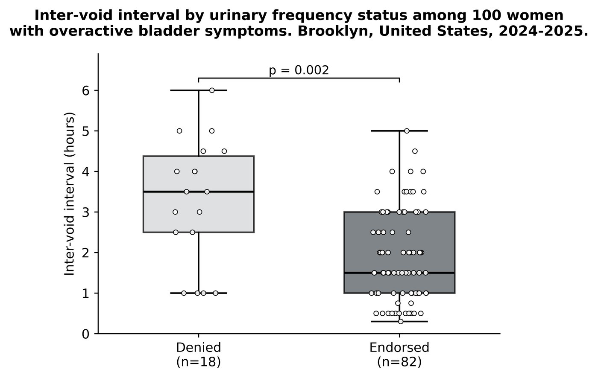
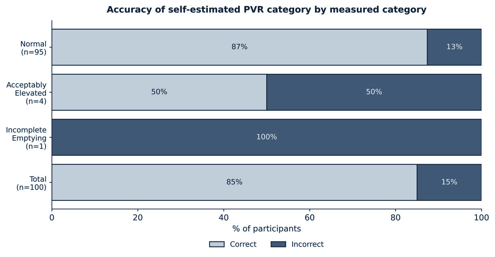

Can women self-estimate their post-void residual?
A guideline can contradict itself. AUA and SUFU guidance endorses telemedicine for the initial evaluation of overactive bladder, and separately requires a post-void residual measurement to exclude retention — which requires the in-office bladder ultrasound that telemedicine was meant to avoid, and that most primary-care offices do not own. The practical question for a family physician is not whether PVR can be measured, but whether it must be, before treatment can safely begin.
How the study was built
Single-centre cross-sectional study at a urogynecology practice in Brooklyn — a dense urban setting — designed so that a negative result would still answer the clinical question.
Who was included
English-speaking women aged 18–85 presenting with bladder complaints — urgency, frequency, sensation of incomplete emptying, hesitancy or incontinence. Women over 85 were excluded to preserve deidentification given how few there were.
Who was excluded, and why it matters
Anyone with a documented history of catheterization or incomplete emptying. That exclusion is the study's most consequential design decision and its main limitation: it removes precisely the women most likely to have an elevated residual, which is why the retention rate here is not a population baseline.
How the estimate was elicited
Participants were told that normal bladder capacity is 300–500 mL and a normal residual under 50–100 mL, then shown pre-filled reference balloons at 5, 10, 100 and 200 mL — anchoring the estimate to something physical rather than a number in the abstract. Immediately after voiding they gave an estimate, and ultrasound measurement followed.
What counted as accurate
Pre-specified as within 30% of the measured value — equivalently, an estimated-to-measured ratio between 0.7 and 1.3 — following Drangsholt et al., in which women estimated voided volumes to that margin. Analysis was by Mann-Whitney U for predictors of accuracy and linear regression of estimated against measured volume.
| Category | Post-void residual (mL) |
|---|---|
| Normal | < 100 |
| Acceptably elevated | 100 – <200 |
| Incomplete emptying | 200 – <300 |
| Retention | ≥ 300 |
Table 1. Retention-risk categories, modified from Ballstaedt et al. The original ≥300 mL and ≥400 mL tiers were combined to align with the AUA threshold for chronic urinary retention.
Who took part Table 2
One hundred women, median age 68 (IQR 55–76), median inter-void interval 2 hours. Measured residuals ranged from 1 to 241 mL.
| Characteristic | Value |
|---|---|
| Age, years — median (IQR) | 68 (55.3–76.0) |
| Inter-void interval, hours — median (IQR) | 2 (1–3) |
| Caffeinated drinks, cups — median (IQR) | 1.0 (0.6–2.0) |
| Non-caffeinated drinks, cups — median (IQR) | 5.0 (3.1–7.0) |
| Presenting: urinary frequency | 82% |
| Presenting: urinary incontinence | 66% |
| Presenting: sensation of incomplete emptying | 33% |
| Presenting: hesitancy | 21% |
| Urgency without incontinence | 62% |
| Nocturia | 60% |
| Urgency incontinence | 51% |
| Stress incontinence | 47% |
| Anxiety | 20% |
| Type 2 diabetes | 18% |
| Depression | 16% |
| Diuretic use | 5% |
| Prior pelvic radiation | 2% |
Table 2. Symptoms and comorbidities were yes/no survey items; continuous variables are medians with interquartile range.
What the measurements showed Table 3 · Figures 1–3
The estimates were not accurate
Twenty-two per cent of women estimated within 30% of their measured value. Estimated and measured volumes were significantly but weakly correlated (slope 0.21, 95% CI 0.06–0.36; p = 0.006), with R² = 0.076 — the self-estimate explains about 8% of the variance, which is a real association and a useless one for any individual patient.

Category accuracy is a mirage
Eighty-five per cent of women named the correct residual category — but almost entirely because nearly everyone was normal and nearly everyone guessed normal. Among the 15 who estimated an elevation, only 3 had any elevation at all. Self-identification of an abnormal residual has poor positive predictive value.
| Estimated category | Normal | Acceptably elevated | Incomplete emptying | Retention | Total | Correctly classified |
|---|---|---|---|---|---|---|
| Normal | 83 | 1 | 1 | 0 | 85 | 97.6% |
| Acceptably elevated | 10 | 2 | 0 | 0 | 12 | 16.7% |
| Incomplete emptying | 2 | 1 | 0 | 0 | 3 | 0% |
| Retention | 0 | 0 | 0 | 0 | 0 | — |
| Measured total | 95 | 4 | 1 | 0 | 100 | 85.0% |
Table 3, Panel B. Rows are what participants estimated; columns are what was measured. Correctly classified is the diagonal divided by the row total — the proportion of women choosing a category who were right.

Nothing predicted who would estimate well
Mann-Whitney U tests across every urinary symptom and comorbidity — frequency, incomplete emptying, hesitancy, incontinence, urgency, nocturia, anxiety, depression, diabetes, diuretic use, prior pelvic radiation — found no significant association with estimation accuracy (all p > 0.12). There is no subgroup in whom self-estimation can be trusted more.

The argument the paper actually makes
That reframes the requirement. If the point of measuring PVR before treating overactive bladder is to catch retention, and retention is essentially absent in women presenting with OAB symptoms and no history of incomplete emptying, then the requirement is buying very little at the cost of an in-office visit — a visit that, for some women, is the reason care does not happen at all.
The paper therefore argues for deferral rather than substitution: in low-risk women, treatment can reasonably begin in primary care or by telemedicine, with measurement reserved for those whose history warrants it. Reassurance comes from the low baseline risk, not from the patient's guess.
Limitations
- The excluded women are the ones at risk. Excluding prior catheterization or documented incomplete emptying enriched the cohort toward low residuals by design. The 1% and 0% figures describe women presenting with OAB symptoms without that history — not population baselines.
- Ultrasound, not catheterization. Straight catheterization is the reference standard; bladder ultrasound was used as non-invasive and previously shown not to differ significantly.
- One measurement, one moment. Residual volume varies between voids and over time; a cross-sectional design cannot capture that.
- Anchoring may have inflated estimates. Reference balloons and stated normal ranges were given to make estimates meaningful, and may have pushed symptomatic women toward guessing high.
- Concurrent OAB medication was not recorded, and it changes emptying independently of underlying function.
- Women only. A prostate creates an obstruction risk with no analogue here, so none of this transfers to men.
The manuscript
Manuscript V7
Submitted to Family Practice (OUP). Behind a passphrase while the work is unpublished — open it here if I sent you one, or email me.
What comes next
A longitudinal design correlating symptoms with both measured and estimated residual over time, and a low-risk rule tested prospectively against in-office evaluation — the study that would turn a deferral argument into a pathway.